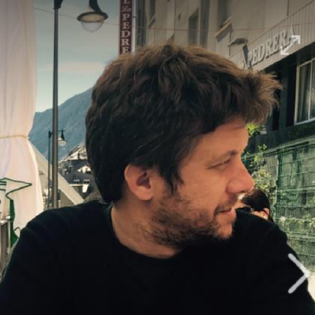
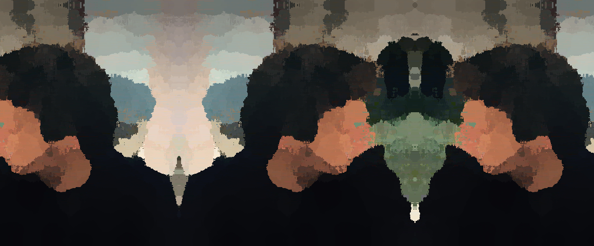
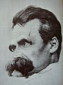
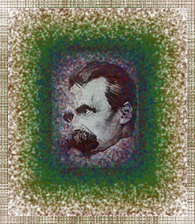
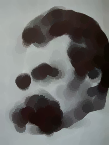
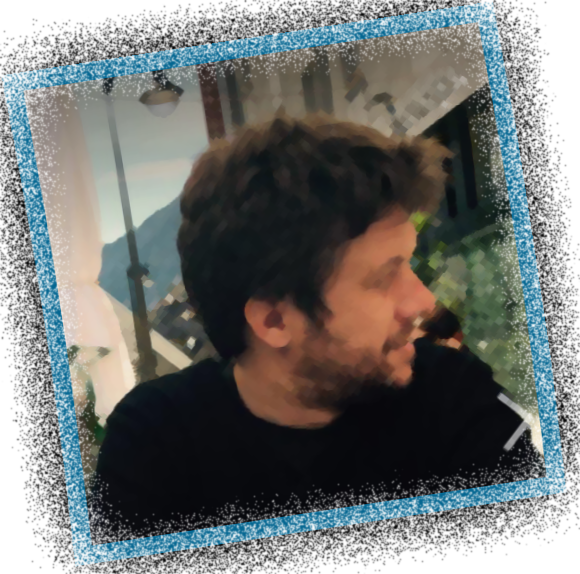

These are some demonstrations using the tool:
Using -spread and -paint to produce a painting-distorted like portrait and then -virtual-pixel to enlarge the image and tile it mirror-like
Original image:
Command chain
[["convert","$INPUT","-interpolate","Blend","-spread","20","$OUTPUT"]]
[["convert","$INPUT","-paint","9","$OUTPUT"]]
[["convert","$INPUT","-set","option:distort:viewport","1158x480-349-10","-virtual-pixel","mirror","-filter","point","-distort","SRT","0","+repage","$OUTPUT"]]
Result image:
Using torn-paper like effect over and over with different colors and then virtual pixel Dither to simulate stamp-like effect
Original image:
Command chain
[["convert","$INPUT","(","+clone","-alpha","extract","-virtual-pixel","black","-spread","35","-blur","0x3","-threshold","50%","-spread","35","-blur","0x.7",")","-alpha","off","-compose","Copy_Opacity","-composite","$OUTPUT"]]
[["convert","$INPUT","-bordercolor","#631111","-border","10x10","-background","#631111","","-gravity","SouthEast","-splice","1x1+0+0","(","+clone","-alpha","extract","-virtual-pixel","black","-spread","26","-blur","0x3","-threshold","50%","-spread","38","-blur","0x.7",")","-alpha","off","-compose","Copy_Opacity","-composite","-gravity","SouthEast","$OUTPUT"]]
[["convert","$INPUT","-bordercolor","#112163","-border","10x10","-background","#112163","","-gravity","SouthEast","-splice","1x1+0+0","(","+clone","-alpha","extract","-virtual-pixel","black","-spread","26","-blur","0x3","-threshold","50%","-spread","38","-blur","0x.7",")","-alpha","off","-compose","Copy_Opacity","-composite","-gravity","SouthEast","$OUTPUT"]]
[["convert","$INPUT","-bordercolor","#11633d","-border","10x10","-background","#11633d","","-gravity","SouthEast","-splice","1x1+0+0","(","+clone","-alpha","extract","-virtual-pixel","black","-spread","26","-blur","0x3","-threshold","50%","-spread","38","-blur","0x.7",")","-alpha","off","-compose","Copy_Opacity","-composite","-gravity","SouthEast","$OUTPUT"]]
[["convert","$INPUT","-bordercolor","#286311","-border","10x10","-background","#286311","","-gravity","SouthEast","-splice","1x1+0+0","(","+clone","-alpha","extract","-virtual-pixel","black","-spread","26","-blur","0x3","-threshold","50%","-spread","38","-blur","0x.7",")","-alpha","off","-compose","Copy_Opacity","-composite","-gravity","SouthEast","$OUTPUT"]]
[["convert","$INPUT","-bordercolor","#636311","-border","10x10","-background","#636311","","-gravity","SouthEast","-splice","1x1+0+0","(","+clone","-alpha","extract","-virtual-pixel","black","-spread","26","-blur","0x3","-threshold","50%","-spread","38","-blur","0x.7",")","-alpha","off","-compose","Copy_Opacity","-composite","-gravity","SouthEast","$OUTPUT"]]
[["convert","$INPUT","-bordercolor","#633111","-border","4x4","-background","#633111","","-gravity","SouthEast","-splice","1x1+0+0","(","+clone","-alpha","extract","-virtual-pixel","black","-spread","26","-blur","0x3","-threshold","50%","-spread","38","-blur","0x.7",")","-alpha","off","-compose","Copy_Opacity","-composite","-gravity","SouthEast","$OUTPUT"]]
[["convert","$INPUT","-set","option:distort:viewport","243x279-10-10","-virtual-pixel","dither","-filter","point","-distort","SRT","0","+repage","$OUTPUT"]]
Result image:
use -morphology Erode and then close with disk kernel to get a blured-artistic effect
Original image:
Command chain
[["convert","$INPUT","-morphology","Erode:3","Sobel","$OUTPUT"]] [["convert","$INPUT","-morphology","Close:1","Disk","$OUTPUT"]]
Result image:
Morphology Erode and dilate several times ending with polaroid and torn paper effect
Original image:
Command chain
[["convert","$INPUT","-morphology","Erode:3","Octagon:1","$OUTPUT"]]
[["convert","$INPUT","-morphology","Dilate:3","Diamond:1","$OUTPUT"]]
[["convert","$INPUT","-morphology","Dilate:3","Diamond:1","$OUTPUT"]]
[["convert","$INPUT","-morphology","Erode:3","Diamond:1","$OUTPUT"]]
[["convert","$INPUT","-bordercolor","#046691","-background","##ff0000","+polaroid","$OUTPUT"]]
[["convert","$INPUT","(","+clone","-alpha","extract","-virtual-pixel","black","-spread","40","-blur","0x3","-threshold","50%","-spread","40","-blur","0x.7",")","-alpha","off","-compose","Copy_Opacity","-composite","$OUTPUT"]]
Result image:
